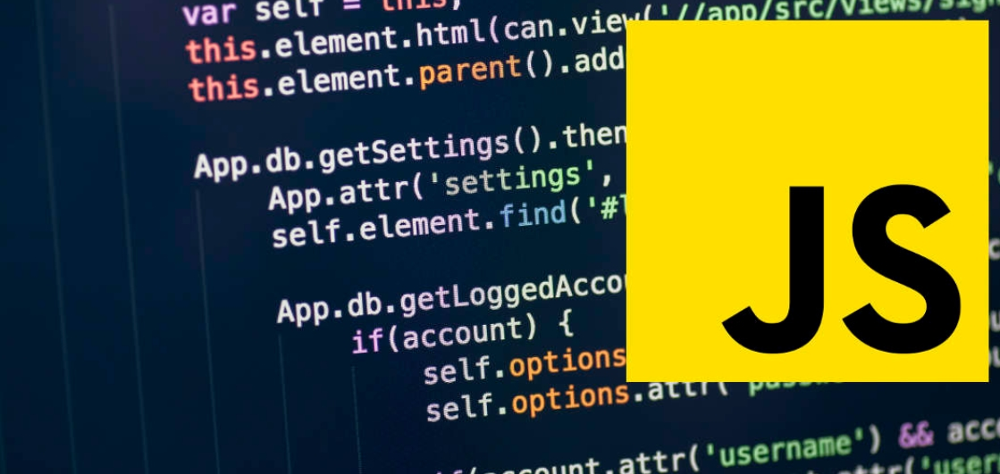

Los Diez Lenguajes de programación orientados a objetos, Backend más populares en 2021, presentados en orden de interés:
1. JavaScript:

JavaScript® (a menudo abreviado como JS) es un lenguaje ligero, interpretado y orientado a objetos con funciones de primera clase, y mejor conocido como el lenguaje de programación para las páginas Web, pero también se utiliza en muchos entornos que no son de navegador. Es un lenguaje de scripts que es dinámico, multiparadigma, basado en prototipos y admite estilos de programación orientados a objetos, imperativos y funcionales.
JavaScript se ejecuta en el lado del cliente de la web, y se puede utilizar para estilizar/programar cómo se comportan las páginas web cuando ocurre un evento. JavaScript es un potente lenguaje de scripts y fácil de aprender, ampliamente utilizado para controlar el comportamiento de las páginas web.
Los navegadores de Internet pueden desactivar la ejecución del código JavaScript, ya que JavaScript se utiliza para codificar anuncios emergentes que, en algunos casos, pueden contener contenido malicioso.
JavaScript se usa ampliamente en el desarrollo de sitios web y aplicaciones móviles. Node.js permite el desarrollo de aplicaciones basadas en navegador, que no requieren que los usuarios descarguen una aplicación. Las aplicaciones populares creadas con marcos de JavaScript incluyen Slack, NetFlix, GitHub, Facebook, Skype, Uber, LinkedIn, Tidal y más.
JavaScript ¿Por qué es tan popular?
JavaScript fue creado en 1995 por Brendan Eich mientras era ingeniero en Netscape
El JavaScript que conocemos hoy originalmente se llamaría LiveScript, pero pasó a llamarse JavaScript como una decisión de marketing que intentó capitalizar la popularidad del lenguaje Java de Sun Microsystem, aunque los dos tienen poco en común.
JavaScript se lanzó por primera vez con Netscape 2 a principios de 1996
JavaScript es la joya de la corona cuando se trata de popularidad del lenguaje de programación. De acuerdo con las ideas del programador de StackOverflow 2019; el lenguaje de programación más popular y utilizado es JavaScript.
La pregunta que probablemente se esté preguntando es, ¿qué hace que JavaScript sea tan ampliamente adoptado y popular? Aquí hay algunas buenas razones por las que personalmente creo que contribuyeron a la popularidad de JavaScript.
JavaScript fue el primer lenguaje ampliamente compatible que se implementó en todos los navegadores. Si desea mostrar una ventana emergente, solo JavaScript podría hacerlo. Eso condujo a un camino natural de dominio mundial, que todavía vemos hasta hoy.
El proceso de adopción a lo largo del tiempo generalmente se ilustra como una distribución normal clásica o curva de campana.
El código JavaScript es ejecutable en el cliente y el servidor
Nos referimos al cliente como el navegador y al servidor como fuera del contexto del navegador. Lo más probable es que estés leyendo el artículo en un navegador o en la aplicación nativa de Medium, que son ambos clientes. El artículo se obtiene del servidor y se sirve en el cliente.
En 2009, Node.js fue lanzado. Node.js es un entorno de código abierto , multiplataform , en tiempo de ejecución de JavaScript que ejecuta código JavaScript fuera de un navegador.
JavaScript con Node.js
En los últimos años JavaScript ha avanzado exponencialmente como lenguaje de programación. Como sabemos, JavaScript antes lo usábamos para agregar interacción a nuestras aplicaciones web, es decir, solo era ejecutado e interpretado por el navegador web, pero todo cambió gracias al lanzamiento de Node.js.
Node.js es un ambiente de ejecución de código JavaScript donde se hace uso de V8, el motor de Google Chrome que está escrito en C++ y fue lanzado en el 2009 por Ryan Dahl.
Una de las mejores características de Node.js es que es multiplataforma, gracias a esto podemos ejecutar JavaScript en cualquier plataforma ya sea en Servidor, Escritorio, Móvil o Web. También existen otras características que destacan a la hora de elegirlo como tecnología, tales como:
Asincronía
Orientación a eventos
Tiempo real
Escalable
Expansible
No bloqueante
Node.js al tener una parte escrita en C/C++ tiene acceso nativo a las diferentes plataformas
A continuación un ejemplo de "Hola, mundo en este lenguaje de programación"
 Python se considera el lenguaje de programación más fácil de aprender, debido a su sintaxis simple, una gran biblioteca de estándares y kits de herramientas, y la integración con otros lenguajes de programación populares como C y C ++. Es un lenguaje de programación popular, especialmente entre las nuevas empresas y, por lo tanto, las habilidades de Python tienen una gran demanda.
Python no es adecuado para el desarrollo de aplicaciones móviles.
Usos comunes: Python se usa en una amplia variedad de aplicaciones, incluida la inteligencia artificial, los servicios financieros y la ciencia de datos. Es interesante saber que los sitios de redes sociales como Instagram y Pinterest también se basan en Python.
Python se considera el lenguaje de programación más fácil de aprender, debido a su sintaxis simple, una gran biblioteca de estándares y kits de herramientas, y la integración con otros lenguajes de programación populares como C y C ++. Es un lenguaje de programación popular, especialmente entre las nuevas empresas y, por lo tanto, las habilidades de Python tienen una gran demanda.
Python no es adecuado para el desarrollo de aplicaciones móviles.
Usos comunes: Python se usa en una amplia variedad de aplicaciones, incluida la inteligencia artificial, los servicios financieros y la ciencia de datos. Es interesante saber que los sitios de redes sociales como Instagram y Pinterest también se basan en Python.
A continuación un ejemplo de "Hola, mundo en este lenguaje de programación"
 Java es una opción clásica de muchos desarrolladores de backend en todo el mundo y el único idioma oficial para el desarrollo de aplicaciones de Android. Java está diseñado para ser un lenguaje de programación poco acoplado, lo que significa que una aplicación escrita en Java puede ejecutarse en cualquier plataforma que admita Java. Como resultado, Java se describe como el lenguaje de programación "escribir una vez, ejecutar en cualquier lugar".
Java no es ideal para aplicaciones que se ejecutan en la nube, a diferencia del servidor (que es común para las aplicaciones comerciales). Más lento que otros lenguajes de programación;
Muchas veces parece que JAVA está perdiendo su encanto, pero cuando miramos las estadísticas reales, cada año JAVA termina con una clasificación realmente buena que demuestra que el idioma en particular todavía funciona bien y tiene demanda en el mundo de la tecnología. Hay alrededor de 8 millones de desarrolladores de JAVA en todo el mundo; tal vez este número pueda ayudarlo a evaluar la demanda y la popularidad de este lenguaje en particular. Además, el lenguaje está ocupando un primer lugar entre todos los lenguajes de programación en el ranking de TIOBE y PYPL. Según los informes de RedMonk, JAVA ocupa el tercer lugar por debajo de JavaScript y Python solamente.
Java es una opción clásica de muchos desarrolladores de backend en todo el mundo y el único idioma oficial para el desarrollo de aplicaciones de Android. Java está diseñado para ser un lenguaje de programación poco acoplado, lo que significa que una aplicación escrita en Java puede ejecutarse en cualquier plataforma que admita Java. Como resultado, Java se describe como el lenguaje de programación "escribir una vez, ejecutar en cualquier lugar".
Java no es ideal para aplicaciones que se ejecutan en la nube, a diferencia del servidor (que es común para las aplicaciones comerciales). Más lento que otros lenguajes de programación;
Muchas veces parece que JAVA está perdiendo su encanto, pero cuando miramos las estadísticas reales, cada año JAVA termina con una clasificación realmente buena que demuestra que el idioma en particular todavía funciona bien y tiene demanda en el mundo de la tecnología. Hay alrededor de 8 millones de desarrolladores de JAVA en todo el mundo; tal vez este número pueda ayudarlo a evaluar la demanda y la popularidad de este lenguaje en particular. Además, el lenguaje está ocupando un primer lugar entre todos los lenguajes de programación en el ranking de TIOBE y PYPL. Según los informes de RedMonk, JAVA ocupa el tercer lugar por debajo de JavaScript y Python solamente.
El lenguaje de programación orientado a objetos presenta un principio muy celebrado de Write Once Run Anywhere que permite que el código Java se ejecute en otras plataformas, que admiten JAVA, sin tener que volver a compilar. El lenguaje se usa ampliamente en el desarrollo de Android junto con aplicaciones web, aplicaciones de escritorio, aplicaciones científicas, etc. Además, empresas de primer nivel como Adobe, Amazon, Flipkart y muchas otras están utilizando JAVA y ofrecen deslumbrantes oportunidades profesionales a los desarrolladores de Java. Su importante demanda en el mundo de la tecnología, el enorme apoyo de la comunidad, los marcos populares como Spring & Hibernate y varias características enriquecedoras como el multiproceso, la asignación automática de memoria y la recolección de basura, la independencia de la plataforma, etc., asegura que JAVA le brindará una carrera que valga la pena. oportunidades en los próximos años también.
Junto con las aplicaciones comerciales, Java se usa ampliamente en el sistema operativo móvil Android. Muchas aplicaciones y sistemas web importantes, como LinkedIn, Amazon, Twitter y otros, se crean con el uso de Java.
A continuación un ejemplo de "Hola, mundo en este lenguaje de programación"
 Como uno de los primeros lenguajes de programación jamás desarrollado, C ha servido como base para escribir lenguajes más modernos como Python, Ruby y PHP. También es un lenguaje fácil de depurar, probar y mantener. C ++ es una extensión de C que funciona bien para programar los sistemas que ejecutan aplicaciones, a diferencia de las aplicaciones en sí. C ++ también funciona bien para sistemas multidispositivo y multiplataforma. Con el tiempo, los programadores han escrito un gran conjunto de bibliotecas y compiladores para C ++.
C ++ tiene una sintaxis compleja y una gran cantidad de características que pueden complicarlo para los nuevos programadores. C ++ tampoco admite la verificación en tiempo de ejecución, que es un método para detectar errores o defectos mientras se ejecuta el software. C no es adecuado para casos de uso más modernos, como sitios web o aplicaciones móviles.
C ++ tiene muchos usos y es el lenguaje detrás de todo, desde juegos de computadora hasta simulaciones matemáticas. C se usa a menudo para programar hardware, como dispositivos integrados en automóviles y dispositivos médicos utilizados en la atención médica. C / C ++ es una especie de lenguaje de programación básico, que se utilizó para crear la mayoría de los sistemas operativos existentes, navegadores web y productos básicos de Microsoft.
Como uno de los primeros lenguajes de programación jamás desarrollado, C ha servido como base para escribir lenguajes más modernos como Python, Ruby y PHP. También es un lenguaje fácil de depurar, probar y mantener. C ++ es una extensión de C que funciona bien para programar los sistemas que ejecutan aplicaciones, a diferencia de las aplicaciones en sí. C ++ también funciona bien para sistemas multidispositivo y multiplataforma. Con el tiempo, los programadores han escrito un gran conjunto de bibliotecas y compiladores para C ++.
C ++ tiene una sintaxis compleja y una gran cantidad de características que pueden complicarlo para los nuevos programadores. C ++ tampoco admite la verificación en tiempo de ejecución, que es un método para detectar errores o defectos mientras se ejecuta el software. C no es adecuado para casos de uso más modernos, como sitios web o aplicaciones móviles.
C ++ tiene muchos usos y es el lenguaje detrás de todo, desde juegos de computadora hasta simulaciones matemáticas. C se usa a menudo para programar hardware, como dispositivos integrados en automóviles y dispositivos médicos utilizados en la atención médica. C / C ++ es una especie de lenguaje de programación básico, que se utilizó para crear la mayoría de los sistemas operativos existentes, navegadores web y productos básicos de Microsoft.
A continuación un ejemplo de "Hola, mundo en este lenguaje de programación"
 PHP se usa ampliamente para el desarrollo web del lado del servidor. Se utiliza principalmente para escribir scripts para sitios web y aplicaciones web, es decir, para crear páginas dinámicas. Como lenguaje más antiguo, PHP se beneficia de un gran ecosistema de usuarios que han producido marcos, bibliotecas y herramientas de automatización para facilitar el uso del lenguaje de programación. El código PHP también es fácil de depurar.
A medida que Python y JavaScript han ganado popularidad, la popularidad de PHP se ha reducido. PHP también es conocido por sus vulnerabilidades de seguridad. Según Indeed, la mayoría de los programadores de PHP asumen roles a corto plazo que duran menos de un año. Los sitios web construidos completamente en PHP son relativamente lentos;
Usos comunes: PHP es el código que ejecuta sitios web orientados al contenido como Facebook, WordPress y Wikipedia.
PHP se usa ampliamente para el desarrollo web del lado del servidor. Se utiliza principalmente para escribir scripts para sitios web y aplicaciones web, es decir, para crear páginas dinámicas. Como lenguaje más antiguo, PHP se beneficia de un gran ecosistema de usuarios que han producido marcos, bibliotecas y herramientas de automatización para facilitar el uso del lenguaje de programación. El código PHP también es fácil de depurar.
A medida que Python y JavaScript han ganado popularidad, la popularidad de PHP se ha reducido. PHP también es conocido por sus vulnerabilidades de seguridad. Según Indeed, la mayoría de los programadores de PHP asumen roles a corto plazo que duran menos de un año. Los sitios web construidos completamente en PHP son relativamente lentos;
Usos comunes: PHP es el código que ejecuta sitios web orientados al contenido como Facebook, WordPress y Wikipedia.
A continuación un ejemplo de "Hola, mundo en este lenguaje de programación"
 Durante los últimos años, C # ha mantenido una buena posición en la lista de los principales lenguajes de programación de casi todos los índices. El idioma ocupa la cuarta y quinta posición en los índices TIOBE y PYPL, respectivamente. En las clasificaciones de idiomas de GitHub, ocupa un lugar en la posición número 5 de manera constante durante los últimos dos años. Además, junto con India, existen enormes oportunidades profesionales para los desarrolladores de C # en otros países.
El lenguaje de programación de propósito general es desarrollado por Microsoft principalmente para su marco .Net. El lenguaje se usa ampliamente para el desarrollo de juegos junto con el desarrollo de aplicaciones de Windows, aplicaciones del lado del servidor, etc. Además, C # presenta un rico conjunto de bibliotecas que lo convierte en un lenguaje de programación más rápido y eficiente. Algunas de las características notables del lenguaje que los desarrolladores a menudo aprecian son: lenguaje estructurado, compilación más rápida, actualizable y escalable, orientado a componentes, integración completa con la biblioteca .NET y muchas más.
Los desarrolladores están utilizando el lenguaje en el software del motor de juegos de Unity de manera constante, y compañías como Intellectsoft, Capgemini, etc.también están usando C # para las empresas, lo que significa que las oportunidades de trabajo para los desarrolladores de C # en el mercado también son satisfactorias. Por lo tanto, si desea aprender C # en 2021, puede hacerlo sin pensarlo dos veces.
Durante los últimos años, C # ha mantenido una buena posición en la lista de los principales lenguajes de programación de casi todos los índices. El idioma ocupa la cuarta y quinta posición en los índices TIOBE y PYPL, respectivamente. En las clasificaciones de idiomas de GitHub, ocupa un lugar en la posición número 5 de manera constante durante los últimos dos años. Además, junto con India, existen enormes oportunidades profesionales para los desarrolladores de C # en otros países.
El lenguaje de programación de propósito general es desarrollado por Microsoft principalmente para su marco .Net. El lenguaje se usa ampliamente para el desarrollo de juegos junto con el desarrollo de aplicaciones de Windows, aplicaciones del lado del servidor, etc. Además, C # presenta un rico conjunto de bibliotecas que lo convierte en un lenguaje de programación más rápido y eficiente. Algunas de las características notables del lenguaje que los desarrolladores a menudo aprecian son: lenguaje estructurado, compilación más rápida, actualizable y escalable, orientado a componentes, integración completa con la biblioteca .NET y muchas más.
Los desarrolladores están utilizando el lenguaje en el software del motor de juegos de Unity de manera constante, y compañías como Intellectsoft, Capgemini, etc.también están usando C # para las empresas, lo que significa que las oportunidades de trabajo para los desarrolladores de C # en el mercado también son satisfactorias. Por lo tanto, si desea aprender C # en 2021, puede hacerlo sin pensarlo dos veces.
A continuación un ejemplo de "Hola, mundo en este lenguaje de programación"
Aunque Go no es un lenguaje de programación tan publicitado, en los últimos años ha sido testigo de un aumento considerable en su demanda y popularidad entre los desarrolladores. Según los informes de Stack Overflow, Go se encuentra en la lista de los 5 idiomas más queridos por los desarrolladores para el año 2020. Empresas como Uber, Google, etc.están trabajando con el idioma Go y puede optar por aprender Go, ya que parece que el idioma será cada vez más grande en los próximos años. Go es un lenguaje de programación de tipado estático, desarrollado por Google, y tiene una sintaxis similar a C. Le proporciona numerosas características enriquecedoras como recolección de basura, tipeo dinámico, seguridad de tipos, alto rendimiento y eficiencia, y muchas más. El lenguaje admite subprocesos múltiples y se puede utilizar en el sistema distribuido, Cloud Computing, etc. Lo mejor del lenguaje es que resuelve varios problemas importantes, como la compilación y ejecución lentas, la falta de disponibilidad de la biblioteca estándar enriquecida, etc.
A continuación un ejemplo de "Hola, mundo en este lenguaje de programación"
 Varios gigantes tecnológicos como Netflix, LinkedIn, eBay, Twitter, etc.están utilizando Scala para sus respectivas plataformas y productos. Se recomienda encarecidamente a los principiantes que opten por Scala debido a su naturaleza fácil de aprender. Como muchas otras empresas esperan incorporar Scala en sus negocios y teniendo en cuenta su creciente demanda entre los desarrolladores, puede convertirse en uno de los lenguajes de programación más buscados en 2021.
El lenguaje fue diseñado principalmente para resolver los problemas que enfrentan los desarrolladores con otro lenguaje, Java. Con el tiempo, ha consolidado una sólida posición entre los desarrolladores. Scala es un lenguaje de programación de propósito general que admite paradigmas de programación funcional y orientada a objetos. Le proporciona algunas características distintivas, como cálculo diferido, interpolación de cadenas, inferencia de tipos, gran escalabilidad y muchas otras. Además, el código de Scala se puede convertir a códigos de bytes y se puede ejecutar en una máquina virtual Java. El lenguaje se está utilizando ampliamente en el área de desarrollo web, ciencia de datos y aprendizaje automático.
Varios gigantes tecnológicos como Netflix, LinkedIn, eBay, Twitter, etc.están utilizando Scala para sus respectivas plataformas y productos. Se recomienda encarecidamente a los principiantes que opten por Scala debido a su naturaleza fácil de aprender. Como muchas otras empresas esperan incorporar Scala en sus negocios y teniendo en cuenta su creciente demanda entre los desarrolladores, puede convertirse en uno de los lenguajes de programación más buscados en 2021.
El lenguaje fue diseñado principalmente para resolver los problemas que enfrentan los desarrolladores con otro lenguaje, Java. Con el tiempo, ha consolidado una sólida posición entre los desarrolladores. Scala es un lenguaje de programación de propósito general que admite paradigmas de programación funcional y orientada a objetos. Le proporciona algunas características distintivas, como cálculo diferido, interpolación de cadenas, inferencia de tipos, gran escalabilidad y muchas otras. Además, el código de Scala se puede convertir a códigos de bytes y se puede ejecutar en una máquina virtual Java. El lenguaje se está utilizando ampliamente en el área de desarrollo web, ciencia de datos y aprendizaje automático.
A continuación un ejemplo de "Hola, mundo en este lenguaje de programación"
 Un lenguaje de programación compatible con Google, Kotlin fue desarrollado inicialmente por JetBrains.
Lo que distingue a Kotlin es que es completamente operable con Java. Además, es compatible con la programación funcional. Kotlin se puede utilizar para desarrollar para Android, aplicaciones web front-end, escritorio y aplicaciones del lado del servidor.
Además, dado que Android es el sistema operativo móvil más vendido, el hecho de que Kotlin sea uno de los mejores idiomas para vigilar en 2021 no es ninguna sorpresa.
Un lenguaje de programación compatible con Google, Kotlin fue desarrollado inicialmente por JetBrains.
Lo que distingue a Kotlin es que es completamente operable con Java. Además, es compatible con la programación funcional. Kotlin se puede utilizar para desarrollar para Android, aplicaciones web front-end, escritorio y aplicaciones del lado del servidor.
Además, dado que Android es el sistema operativo móvil más vendido, el hecho de que Kotlin sea uno de los mejores idiomas para vigilar en 2021 no es ninguna sorpresa.